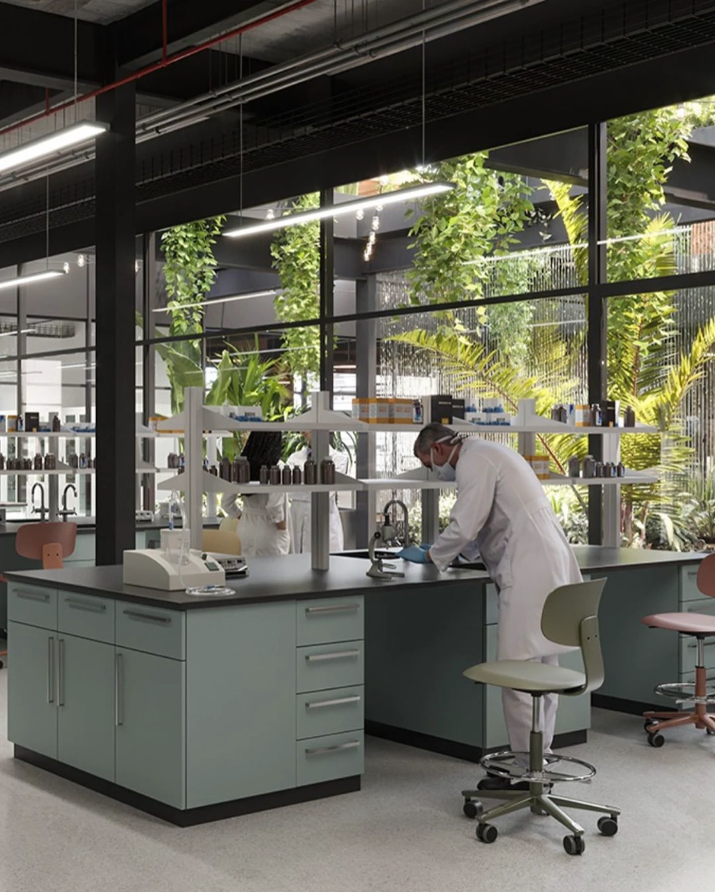

Мережа виробничих аптек ТОВ «ФК«Екофарм» розширюється!
У рамках національної стратегії розвитку локального аптечного виробництва в Україні вже працюють перші ліцензовані виробничі аптеки «Екофарм»:

Лікарські засоби на основі канабіноїдів — це препарати, що містять активні речовини рослини канабісу та застосовуються з лікувальною метою за призначенням лікаря.

Ми створювали компанію з розумінням того, що лікування має бути не лише ефективним, а й максимально адаптованим до конкретної людини. Саме тому особливу увагу приділяємо розвитку препаратів на основі канабіноїдів у медичній практиці.
БільшеСвіжі релізи, важливі оголошення та репортажі з головних подій фармацевтичної галузі.
У рамках національної стратегії розвитку локального аптечного виробництва в Україні вже працюють перші ліцензовані виробничі аптеки «Екофарм»:

У рамках національної стратегії розвитку локального аптечного виробництва в Україні вже працюють перші ліцензовані виробничі аптеки «Екофарм»:

У рамках національної стратегії розвитку локального аптечного виробництва в Україні вже працюють перші ліцензовані виробничі аптеки «Екофарм»:
Розвиваємо мережу представництв по всій Україні, щоб забезпечити доступність якісних ліків у кожному куточку країни.
Це препарати, які містять активні речовини рослини канабісу (канабіноїди) і застосовуються виключно з лікувальною метою. Їх призначає лікар у випадках, коли традиційні методи лікування не дають достатнього результату або викликають сильні побічні ефекти.
Так, абсолютно законно. В Україні медичний канабіс дозволений для використання у медичних цілях за призначенням лікаря. Виробничі аптеки ТОВ «ФК «Екофарм» мають усі необхідні державні ліцензії, працюють суворо в правовому полі та забезпечують повний контроль, безпеку і законність на кожному етапі.
Препарати містять різні компоненти. Наприклад, КБД (канабідіол) взагалі не має психоактивної дії, а спрямований на зняття запалення та тривожності. ТГК (тетрагідроканабінол) може мати психоактивний ефект, але у ліках він чітко дозований для зменшення болю чи спазмів. Оскільки дозування підбирається лікарем індивідуально, препарати є безпечними та не використовуються для розваги.
Лікар може рекомендувати такі препарати для полегшення симптомів при:
Процес складається з трьох простих кроків:
Ми виготовляємо препарати індивідуально — безпосередньо під потреби конкретного пацієнта та відповідно до вказівок лікаря у рецепті. Для цього ми використовуємо сучасне фармацевтичне обладнання, забезпечуємо аптечну точність дозування та суворий контроль якості на кожній стадії виробництва й зберігання.
Наші спеціалісти готові надати вам додаткову інформацію про медичний канабіс та особливості отримання препаратів.